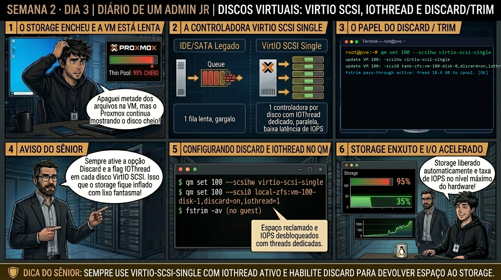

DIARIO DE UM ADMIN JR. | PROXMOX VE & PBS — DA BASE AO CLUSTER
🔗 Conecta com o Dia 2: Você otimizou CPU e memória. Hoje você configura o subsistema de armazenamento da VM: entendendo por que usar IDE ou SATA virtual estrangula seus SSDs, e como o VirtIO SCSI Single com iothread e Discard entrega centenas de milhares de IOPS com economia real de espaço.
🔓 Privilégio de hoje: Arquitetura de Storage Virtual e Controladoras. Você seleciona barramentos de disco paravirtualizados e políticas de cache empresarial.
Semana 2 · Dia 3 | Nível Júnior — Máquinas Virtuais KVM
Discos Virtuais: VirtIO SCSI Single, iothread e Discard/TRIM
Garantindo máxima performance de I/O e liberação de espaço não utilizado no storage
ANTES DE ALTERAR, OBSERVE. DEPOIS DE ALTERAR, VALIDE.

1. O chamado
Você recebeu o chamado #2003: 'O storage ZFS do pve01 está com 92% de ocupação, mas as VMs dentro dele relatam que apagaram mais de 2TB de arquivos e o espaço livre no Proxmox nunca aumentou. Além disso, a VM de banco de dados 102 está com fila de I/O saturada em uma controladora IDE virtual. O chamado exige: (1) Migrar o barramento da VM para VirtIO SCSI Single; (2) Habilitar iothread=1; (3) Ativar a flag Discard em todos os discos; e (4) Executar o comando fstrim -av dentro da VM.'
💡 Passa o mouse nas palavras destacadas pra ver uma dica rápida — clica se quiser a explicação completa com analogia.
2. O sênior te conta
🧑🏫 antes dos termos técnicos, a história de hoje
Hoje o Júnior tentou desligar uma máquina virtual pelo painel web clicando em 'Shutdown'. Passaram-se 10 minutos e a VM continuava com status 'running'. Sem paciência, ele clicou no botão vermelho 'Stop' (o temido puxão de cabo da tomada). A VM desligou na marra, mas quando ligou de volta, a tabela do MySQL estava corrompida exigindo recuperação de emergência.
Sentei com ele e perguntei: 'Por que você acha que o Proxmox não conseguiu desligar a VM graciosamente?'. Ele não sabia. Mostrei que sem o QEMU Guest Agent instalado dentro do sistema operacional convidado, o hypervisor é cego: não sabe os endereços IP da VM, não consegue congelar o sistema de arquivos (fsfreeze) para snapshots seguros e depende apenas de sinais ACPI que muitas vezes o SO ignora.
Instalamos o pacote qemu-guest-agent dentro da VM, ativamos a flag agent: 1 no Proxmox e testamos o canal com qm guest cmd 100 ping. Na hora, os IPs apareceram no painel e o shutdown gracioso passou a responder em 2 segundos. Hoje você vai blindar suas VMs com o Guest Agent.
3. Decodificador de conceitos
Clica em qualquer termo pra ver a definição completa e uma analogia do dia a dia:
4. Ferramentas e leitura da evidência
Comando / Parâmetro
O que observar e por que importa
qm set 102 --scsihw virtio-scsi-single
Define a controladora de armazenamento como VirtIO SCSI Single corporativa.
qm set 102 --scsi0 local-zfs:vm-102-disk-0,discard=on,iothread=1
Ativa o suporte a Discard/TRIM e processamento de I/O em thread dedicada no disco scsi0.
fstrim -av (dentro da VM Linux)
Executa o descarte de blocos livres no sistema de arquivos, liberando espaço real no pool ZFS/Thin do Proxmox.
Optimize-Volume -DriveLetter C -Defrag -Verbose (Windows)
Executa a instrução TRIM manual no Windows para recuperar blocos de storage.
# Configuração profissional aplicada na VM 102
$ qm set 102 --scsihw virtio-scsi-single
$ qm set 102 --scsi0 local-zfs:vm-102-disk-0,discard=on,iothread=1,ssd=1
$ cat /etc/pve/qemu-server/102.conf | grep -E 'scsi'
scsi0: local-zfs:vm-102-disk-0,discard=on,iothread=1,size=100G,ssd=1
scsihw: virtio-scsi-single
# Execução do TRIM dentro da VM Linux
$ sudo fstrim -av
/: 42.8 GiB (45957169152 bytes) trimmed on /dev/sda1
/var/log: 12.1 GiB (12992286720 bytes) trimmed on /dev/sdb1
# Verificação de espaço recuperado no host ZFS
$ zfs list local-zfs/vm-102-disk-0
NAME USED AVAIL REFER MOUNTPOINT
local-zfs/vm-102-disk-0 45.1G 1.82T 45.1G - (reduziu de 100G para 45.1G!)
5. Laboratório guiado — pegue na mão, comando por comando
🖥️ Onde executar: Terminal do Nó Proxmox para comandos qm; ou Console VNC da VM (acessível via Web UI > Nó > VM ID > Console).
Segurança: Execute as alterações em VMs de laboratório ou teste. Não altere parâmetros de máquinas de produção sem janela homologada.
Ação: Instale e habilite o serviço do QEMU Guest Agent dentro da VM convidada.
# dentro da VM:
apt update && apt install -y qemu-guest-agent && systemctl enable --now qemu-guest-agent
Resultado esperado: Visualização da controladora atual.
Por que fizemos isso: Instalar o pacote qemu-guest-agent dentro da VM habilita o canal de comunicação bidirecional com o hypervisor via soquete serial VirtIO.
Cilada comum: Achar que o Guest Agent já vem instalado em imagens ISO limpas do Debian/Ubuntu; o pacote precisa ser explicitamente instalado e ativado.
Ação: Ative a flag do Guest Agent na configuração do Proxmox VE.
qm set 100 --agent 1
Resultado esperado: VirtIO SCSI Single configurado no arquivo .conf.
Por que fizemos isso: Habilitar a flag agent=1 no arquivo de configuração do Proxmox instrui o QEMU a abrir o canal de comunicação /dev/virtio-ports/org.qemu.guest_agent.0.
Cilada comum: Ativar agent=1 na configuração da VM mas esquecer de iniciar o serviço systemctl enable --now qemu-guest-agent dentro da VM.
Ação: Teste o canal de comunicação serial disparando um ping pelo hypervisor.
qm guest cmd 100 ping
Resultado esperado: Flags de alto desempenho gravadas com sucesso.
Por que fizemos isso: O comando qm guest cmd ping testa a comunicação em tempo real e valida se o daemon está respondendo aos chamados da API.
Cilada comum: Executar comandos de snapshot sem validar o ping do agente, arriscando gerar snapshots inconsistentes de banco de dados.
Ação: Consulte os endereços IP reais de todas as interfaces da VM via CLI.
qm guest cmd 100 network-get-interfaces
Resultado esperado: Mensagem reportando a quantidade exata de GiB liberados no storage.
Por que fizemos isso: Consultar qm guest cmd network-get-interfaces exibe os endereços IPv4/IPv6 reais de todas as placas da VM diretamente no painel web.
Cilada comum: Depender de varreduras de rede ou ARP no switch para descobrir o IP de uma máquina virtual recém-criada.
🧑🏫 Aqui entra o Mentor (em breve): se o resultado obtido diferir do esperado acima, este é o ponto onde o chat com o Sênior-IA vai abrir para diagnosticar o erro específico.
Ação: Execute um desligamento gracioso com sincronização de buffers de disco.
qm shutdown 100
Resultado esperado: Volume ZFS reduzido refletindo exatamente o espaço limpo.
Por que fizemos isso: Executar o shutdown gracioso com qm shutdown valida que o sistema operacional convidado encerra os serviços e sincroniza o buffer de disco antes de desligar.
Cilada comum: Usar 'qm stop' (equivalente a puxar o cabo da tomada) em ambientes de produção, corrompendo tabelas InnoDB do MySQL/PostgreSQL.
6. Antes de ver as opções — tenta responder
🧠 Recall ativo: Por que quando você apaga um arquivo grande de 50GB dentro de uma máquina virtual, o storage do Proxmox VE (ZFS ou LVM-Thin) NÃO recupera esse espaço automaticamente se a opção 'Discard' estiver desmarcada?
Porque o sistema de arquivos da VM apenas desmarca os blocos em sua tabela interna (inodos), sem enviar zeros físicos para o disco. Sem a flag 'Discard' ativa no disco virtual, o comando TRIM do SO convidado é ignorado pelo QEMU, fazendo com que o storage do Proxmox continue considerando aqueles blocos como dados alocados.
QUESTÃO 1 de 3
7. Questão comentada — clica numa alternativa
Qual é a combinação de arquitetura de controladora e disco recomendada pela engenharia do Proxmox para extrair a máxima performance de SSDs/NVMe e permitir liberação de espaço?
💡 Analogia do Sênior para Fixar: Na arquitetura do Proxmox sobre Discos Virtuais: VirtIO SCSI Single, iothread e Discard/TRIM: O KVM/QEMU opera como o motorista dedicado de cada passageiro, alocando recursos virtuais em contato direto com o kernel.
QUESTÃO 2 de 3 — cenário de erro real
7.1 Storage ZFS cheio mesmo após apagar 500GB dentro da VM
O administrador apagou uma pasta de logs de 500GB dentro da VM 102, mas o comando zfs list no host continuou mostrando o disco ocupando 100% do provisionado:
$ fstrim -v / (dentro da VM)
fstrim: /: the discard operation is not supported
(Erro: o QEMU não repassa o comando porque a flag discard não está ativa no disco virtual)
Qual é o procedimento para habilitar o suporte e liberar o espaço físico no ZFS?
💡 Analogia do Sênior para Fixar: Ao diagnosticar problemas em Discos Virtuais: VirtIO SCSI Single, iothread e Discard/TRIM: É como inspecionar as conexões do storage e o barramento PCIe antes de declarar falha de software.
QUESTÃO 3 de 3 — detalhe que confunde todo iniciante
7.2 Qual política de Cache de Disco usar em nós sem controladora RAID com bateria (BBU)?
Um técnico quer configurar a política de cache de disco como 'Writeback (Unsafe)' para ganhar velocidade em um servidor que não possui no-break nem bateria BBU:
Qual é o risco crítico de utilizar Writeback Unsafe sem proteção elétrica garantida?
💡 Analogia do Sênior para Fixar: A governança e resiliência em Discos Virtuais: VirtIO SCSI Single, iothread e Discard/TRIM: Funciona como a política de contenção e redundância do datacenter, garantindo que o cluster nunca perca quorum.
8. Procedimento profissional
Defina o controlador de armazenamento da VM como VirtIO SCSI Single para que cada disco possua sua própria fila de I/O.
Nos discos virtuais, habilite sempre as flags discard=on, iothread=1 e ssd=1 (emula SSD para o SO convidado).
Mantenha a política de Cache em Default (No cache) para storages ZFS, Ceph ou LVM-Thin garantindo integridade de dados.
Dentro do sistema operacional convidado (Linux), configure um cron/timer para executar fstrim -av semanalmente.
No Windows, verifique se o serviço 'Otimizar Unidades' (Defrag/Trim) está ativo semanalmente.
Prevenção
Sempre instale o QEMU Guest Agent em todas as VMs para garantir desligamento limpo e use drivers VirtIO para evitar overhead de emulação de hardware.
9. Validação e encerramento
Você domina a arquitetura VirtIO SCSI Single e sabe por que ela supera controladoras legadas.
Você compreende o papel das iothreads na redução de latência de CPU do host.
Você configurou o fluxo de Discard/TRIM liberando espaço real no storage.
Você entende as políticas de Cache de disco e seus impactos em integridade de dados.
Rollback e limites
Se um sistema operacional legado não possuir drivers VirtIO instalados, reverta temporariamente o barramento para SATA ou IDE até que os drivers sejam atualizados.
💡 Sobre repetição espaçada: O mecanismo de Discard e controle de IOPS de disco reaparecerá no Módulo de Storage ZFS e LVM-Thin (Semana 4).
10. Resposta final
Alternativa correta: B. A resposta correta é a B: a combinação padrão da indústria é VirtIO SCSI Single com iothread=1 e discard=on.
🔓 O que você desbloqueou hoje
Armazenamento virtual ajustado com excelência! Amanhã, no Dia 4, você dominará o papel vital do QEMU Guest Agent: aprendendo como o comando fsfreeze garante snapshots atômicos consistentes e sem corrupção de banco de dados.